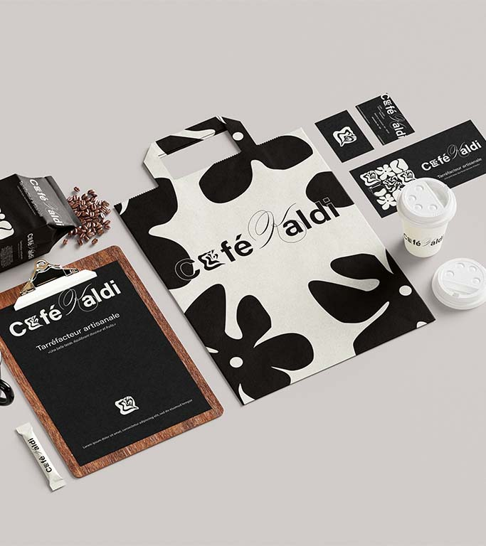
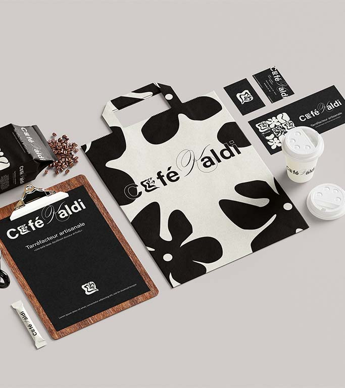
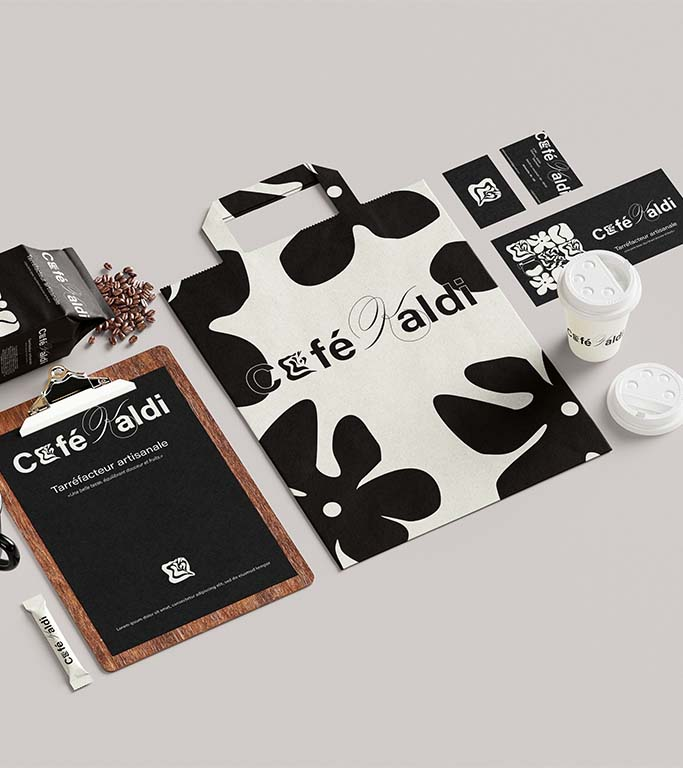

Coneption de l’identité visuelle de Café Kaldi dans l’objectif d’en moderniser l’image tout en respectant ses racines artisanales. L’identité repensée s’appuie sur un système graphique composé de pictogrammes évoquant les étapes clés de la préparation du café, comme un hommage visuel au savoir-faire de la marque. Ces illustrations sont associées à une typographie élégante et raffinée, créant un équilibre entre tradition et contemporanéité. Le résultat est une identité visuelle chaleureuse et intemporelle, qui reflète la passion et l’authenticité de Café Kaldi.
